Artikli
U programu Microsoft Dynamics 365 Business Central postoje tri vrste artikala:
- Fizički artikli koji se drže na zalihama – proizvodi koji se skladište i prate kroz sistem zaliha.
- Fizički artikli koji se ne drže na zalihama – proizvodi koji se ne skladište, ali se evidentiraju u sistemu.
- Uslužni artikli – nematerijalne stavke koje predstavljaju usluge.
Sa liste artikala korisnik može pristupiti kartici artikla radi pregleda, izmene postojećih ili unosa novih artikala. Kartica artikla sadrži detaljne informacije o konkretnom artiklu.
Postoji nekoliko načina prikaza liste artikala:
- Lista artikala – svaki red sadrži ključne podatke o artiklu, poput šifre, opisa, količine i jedinice mere. 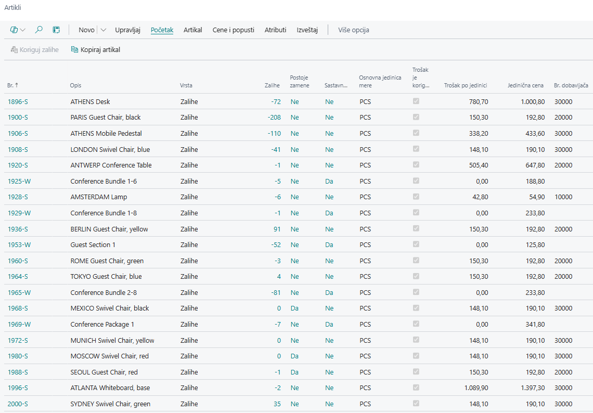
- Uspravne pločice – istaknut je vizuelni prikaz artikla sa osnovnim informacijama.

- Pločice – prikazana je manja slika artikla uz pet najvažnijih polja.

Odabir načina prikaza popisa artikala dostupan je preko dugmeta Pregledajte opcija raspodela u gornjem desnom delu ekrana prikazanom na sledećoj slici:
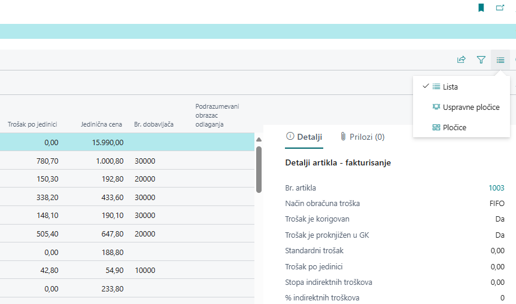
Za svaki artikal koji se evidentira u programu potrebno je otvoriti analitičku karticu. Ova kartica sadrži osnovne podatke o artiklu. Novi artikal se kreira sa liste artikala izborom opcije Novi.
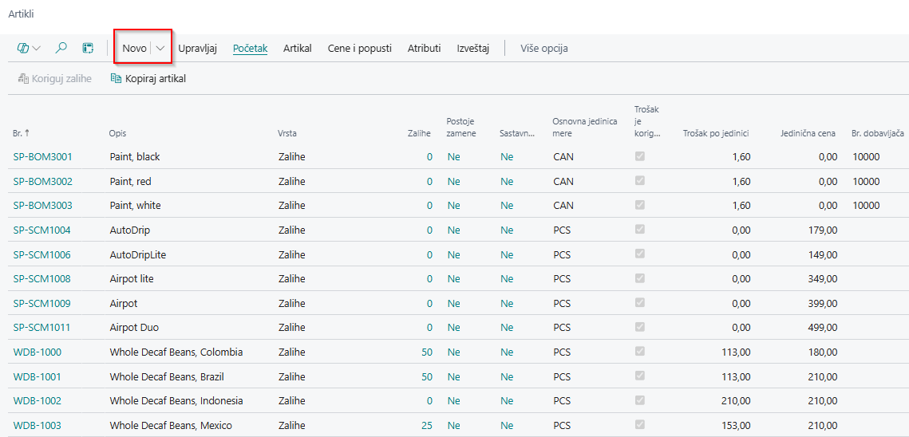
Ako su unapred definisani obrasci sa osnovnim podacima, prikazaće se odgovarajuća lista. Potrebno je odabrati željeni obrazac i potvrditi izbor klikom na U redu, nakon čega se otvara prozor za unos podataka.
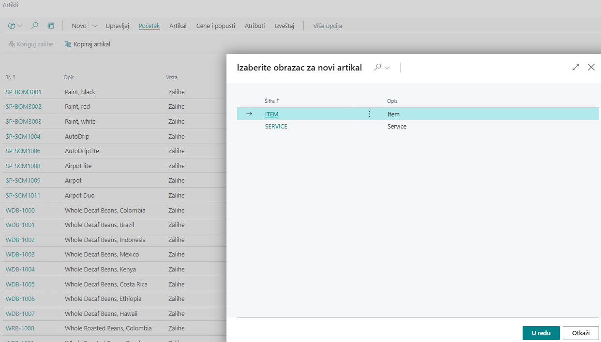
Struktura kartice artikla
Kartica artikla organizovana je kroz brze kartice, gde su informacije grupisane po relevantnim kategorijama.
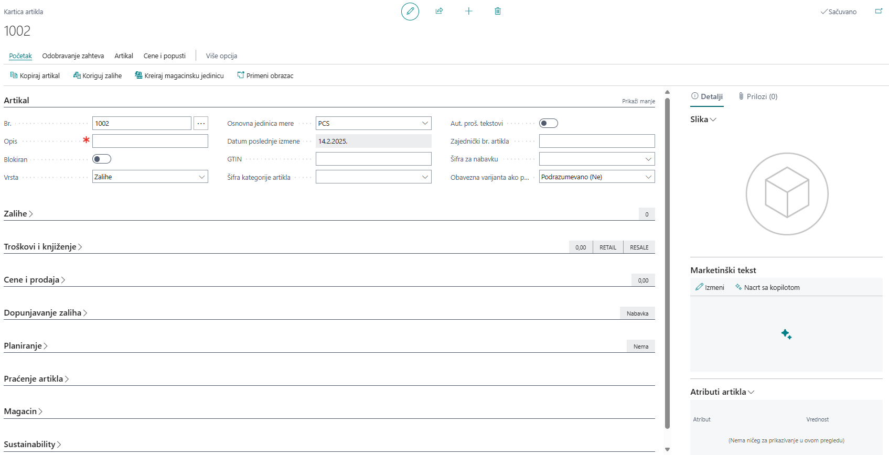
Na desnoj strani kartice nalazi se informacioni okvir sa dodatnim podacima, uključujući:
- Slike artikla
- Atributi artikla
- Mogućnost prilaganja dokumenata
- Linkovi ka web stranicama
- Beleške o artiklu
Sekcije na kartici artikla
1. Artikal
Ova sekcija sadrži osnovne informacije o artiklu, uključujući:
- Br. (Šifra artikla koja je ručno uneta ili automatski generisana iz numeričke serije)
- Opis (naziv artikla)
- Blokiran (opcija za privremenu ili trajnu zabranu korišćenja artikla)
- Vrsta (Zaliha, Servis ili Nije zaliha)
- Osnovna jedinica mere (mogućnost izbora ili kreiranja nove jedinice) 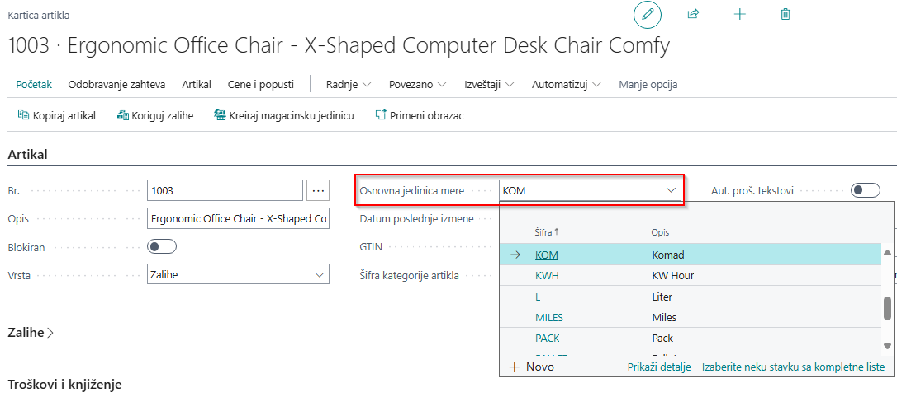
Ako na listi ne postoji potrebna jedinica mere, možete je kreirati. Da biste to uradili, kliknite na strelicu u polju Osnovna jedinica mere, a zatim u otvorenom prozoru odaberite opciju Novo, kao što je prikazano na prethodnoj slici.
Svaki artikal može imati više jedinica mere, ali samo jedna od njih može biti osnovna. Zalihe se uvek vode u osnovnoj jedinici mere. Ukoliko artikal ima više jedinica mere, potrebno je uspostaviti odnos između njih. Odaberete Povezano->Artikal->Jedinice mere.
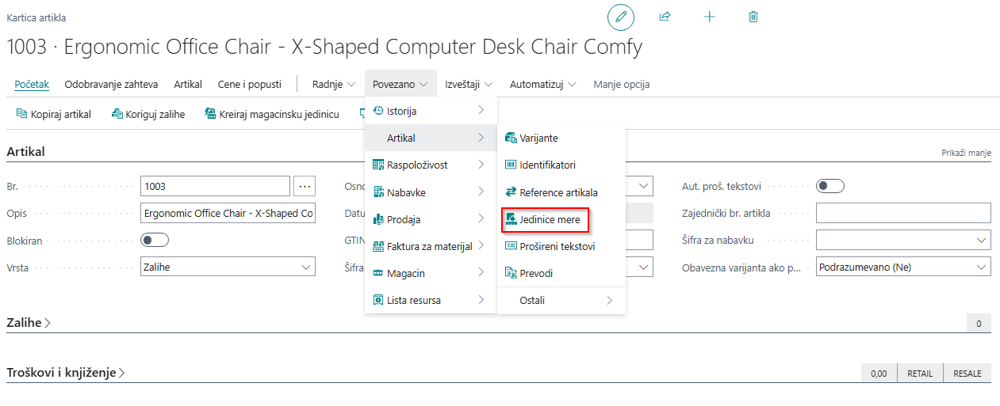
Ako pretpostavimo da neki artikal vodimo u komadima, ali ga nabavljamo u paketu i da pri tome jedan paket sadrži 10 komada, tada prozor treba biti popunjen na sledeći način:
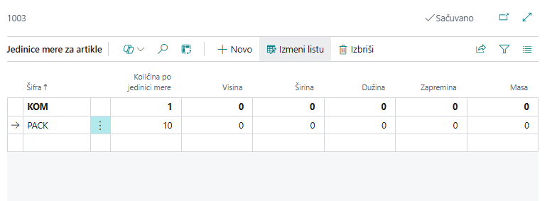
- Šifra kategorije artikla
U polju Šifra kategorije artikla klikom na strelicu možete izabrati kategoriju kojoj pripada artikl. Ukoliko ne postoji kategorija artikla u koju biste želeli staviti artikal, možete sami kreirati novu kategoriju. Postupak je sličan kao kod kreiranja nove Osnovne jedinice mere.
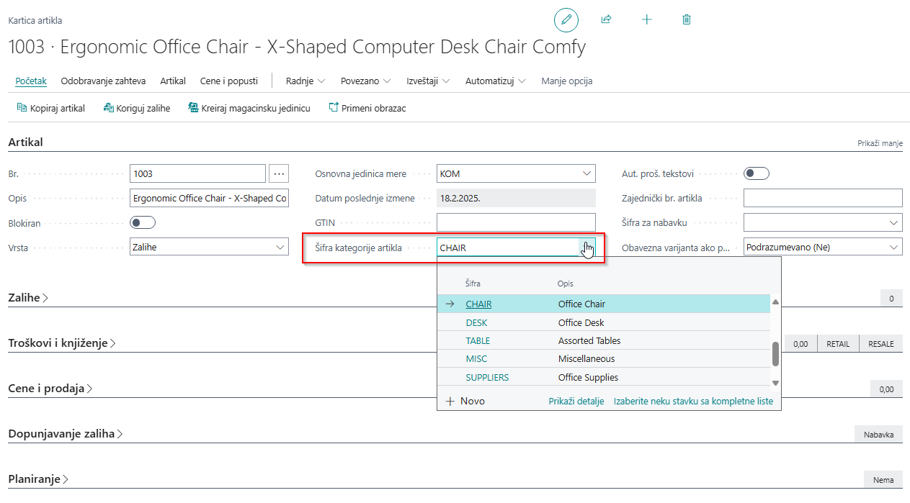
- Automatski prošireni tekstovi
Ova akcija omogućava dodavanje dodatnog opisa na prodajne i nabavne dokumente. Prošireni tekst se dodaje praćenjem sledeće putanje: Povezano-Artikal-Prošireni tekstovi.
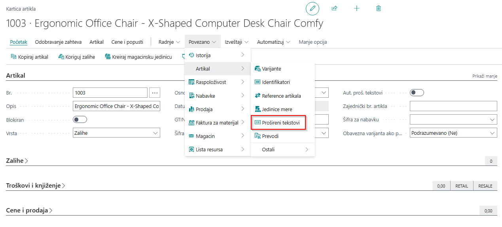
U otvorenom prozoru potrebno je odabrati akciju Novo i popuniti data polja.
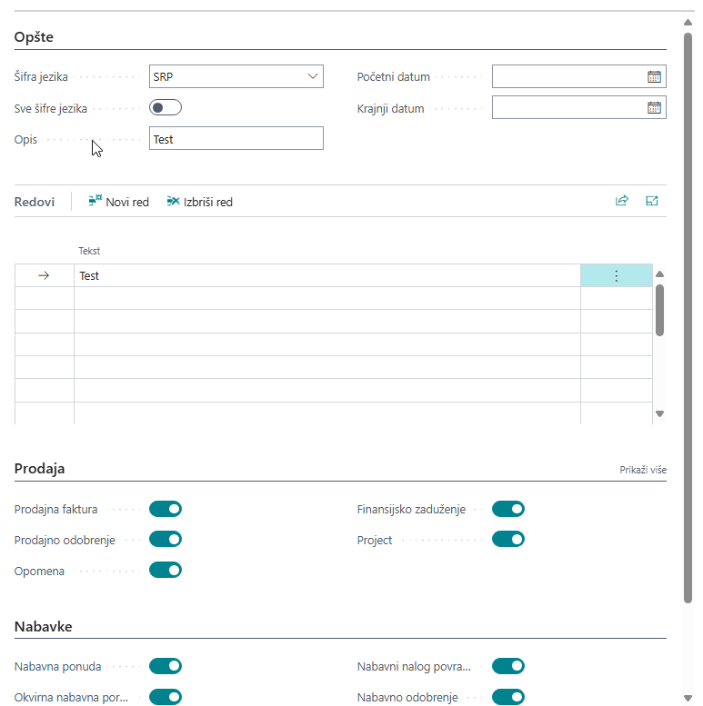
- Zajednički broj artikla
Ovo polje označava jedinstveni broj artikla unutar preduzeća ili grupacije.
2. Zalihe
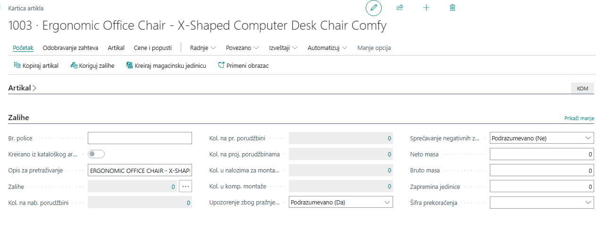
U polje Br. police možete uneti lokaciju artikla u skladištu, što predstavlja njegovu opštu poziciju u svim skladištima.
Polje Zalihe prikazuje trenutnu zalihu izraženu u osnovnoj jedinici mere.
Na ovoj brzoj kartici dostupni su podaci o bruto i neto težini artikla, kao i o količini na nalozima u nabavci i prodaji.
3. Cene i knjiženje
Ova sekcija prikazuje:
- Troškove artikla
- Obračun troška artikla (FIFO, LIFO, Specifičan, Prosečan, Standardan)
- Knjižne grupe
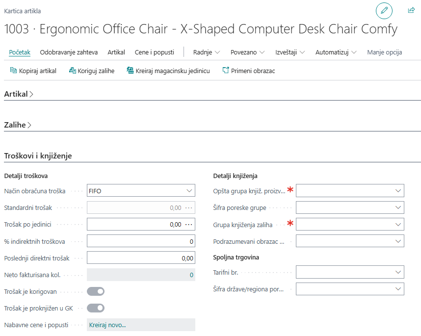
U polju Način obračuna troška potrebno je izabrati metodu koja će se primenjivati pri obračunu troškova artikla.
Polje Trošak po jedinici prikazuje prosečan trošak nabavke, nezavisno od izabrane metode obračuna troškova.
Polje Trošak je proknjižen u GK biće aktivno ako su svi troškovi zaliha za ovaj artikal proknjiženi u glavnoj knjizi (GK). Ako je neaktivno, to znači da postoje troškovi zaliha koji su evidentirani u stavkama knjige artikala i stavkama vrednosti, ali još nisu proknjiženi u GK.
Polje Poslednji direktni trošak prikazuje poslednji evidentirani trošak nabavke za dati artikal.
U polju Opšta grupa knjiženja proizvoda bira se odgovarajuća knjižna grupa proizvoda kojoj artikal pripada. Prilikom knjiženja transakcija koje uključuju ovaj artikal, program koristi ovu šifru u kombinaciji sa šifrom opšte knjižne grupe tržišta iz prozora Podešavanje opšteg knjiženja. Prozor „Podešavanje opšteg knjiženja“ određuje konta na koja će program knjižiti prodaju, nabavku, popuste i druge iznose.
Polje Šifra poreske grupe sadrži pripadajuću knjižnu grupu proizvoda za PDV. Program koristi ovu šifru u kombinaciji sa šifrom knjižne grupe tržišta za PDV iz prozora Podešavanje knjiženja za PDV, čime se određuju konta PDV-a na koja će transakcije biti knjižene.
U polju Grupa knjiženja zaliha određuje se šifra knjižne grupe zaliha kojoj artikal pripada. Ova grupa definiše na koji konto zaliha u GK će program knjižiti transakcije vezane za artikal.
Napomena: Tačno popunjavanje ovih polja je neophodno, jer u suprotnom knjiženje artikla neće biti moguće.
Polje Tarifni br. omogućava unos šifre tarifnog broja artikla.
Polje Šifra države/regiona porekla služi za unos šifre države ili regije u kojoj je artikal proizveden ili obrađen.
4. Cene i prodaja
Ova kartica sadrži informacije o cenama, marži, popustima i jedinici mere u kojoj se artikal prodaje.
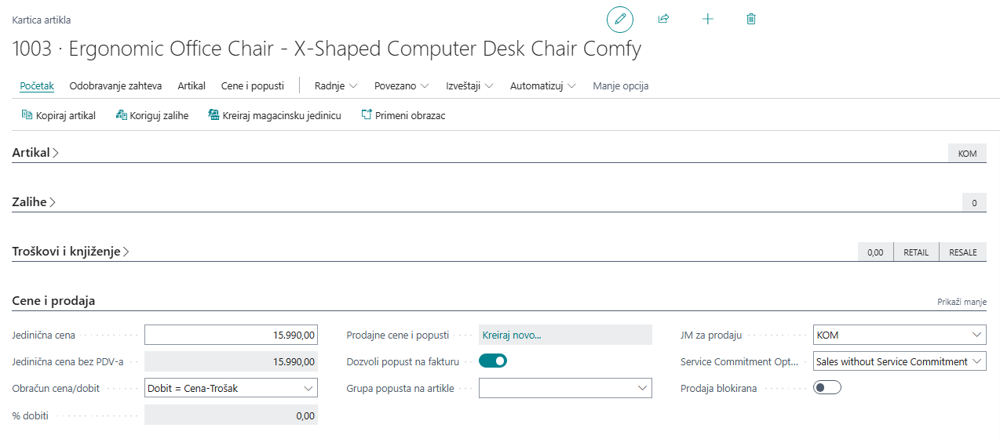
U polju Jedinična cena unosi se prodajna cena artikla, koja će se automatski preuzimati u prodajne dokumente (cenu je moguće promeniti na samom dokumentu).
Moguće je da se artikal nabavlja u jednoj jedinici mere, prodaje u drugoj, a vodi na zalihama u trećoj. U polju JM za prodaju definiše se jedinica mere u kojoj će se artikal prodavati.
Aktiviranjem opcije Dozvoli popust na fakturu omogućava se primena popusta na prodajnom dokumentu. Ako je ovo polje neaktivno, popust neće biti dostupan na fakturi.
Opcija Prodaja blokirana sprečava prodaju artikla i njegov izbor u prodajnim dokumentima.
5. Dopunjavanje zaliha
Ova sekcija sadrži informacije o metodama popunjavanja zaliha (nabavka, radni nalog, montaža). U zavisnosti od izabrane opcije, dostupni su dodatni parametri za popunjavanje zaliha.
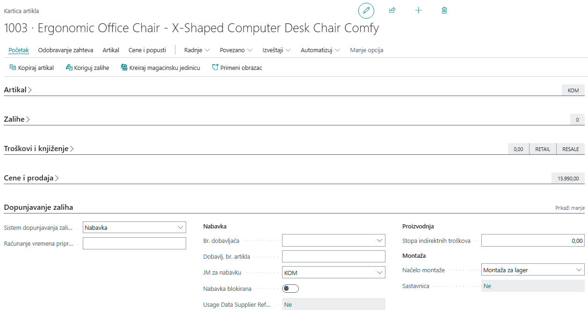
- Sistem popunjavanja zaliha – Određuje način dopunjavanja zaliha.
- Računanje vremena pripreme – Unosi se formula koja određuje potrebno vreme za dopunjavanje artikla.
- Br. dobavljača – Omogućava izbor dobavljača klikom na strelicu.
- Dobavljačev broj artikla - Unosi se broj pod kojim dobavljač vodi artikal (do 50 znakova, brojeva ili slova).
- JM za nabavku – Jedinica mere koja se koristi prilikom nabavke (podrazumevano je ista kao osnovna JM).
- Nabavka blokirana – Ako je aktivirana, onemogućava izbor artikla u nabavnim dokumentima.
6. Planiranje
Ova kartica sadrži informacije o planiranju zaliha, uključujući načela naručivanja i parametre definisane u polju Načelo naručivanja, koji određuju pravila naručivanja u sistemu. 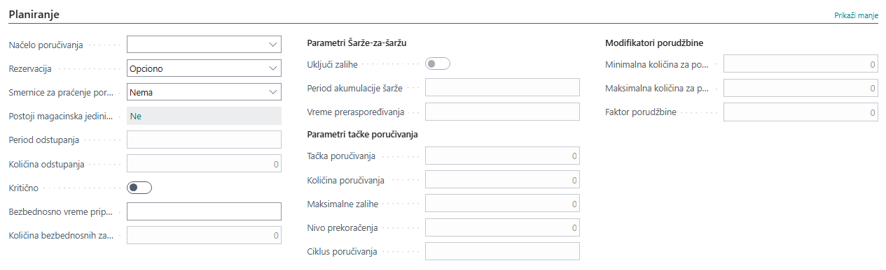
7. Praćenje artikla
Omogućava praćenje artikala prema serijskom broju ili broju šarže.

Polje Šifra praćenja artikla određuje način na koji će program pratiti artikal u zalihama. U zavisnosti od postavki, artikli se mogu pratiti prema serijskim brojevima ili broju šarže.
8. Magacin
Ova sekcija sadrži informacije o skladištu, uključujući šifru klase magacina i šifru jedinice mere za skladištenje. 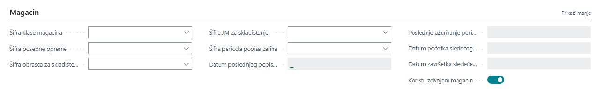
Da bi proces nabavke i prodaje bio što efikasniji, u Microsoft Dynamics 365 Business Central moguće je koristiti dodatne funkcionalnosti kao što su zamenski artikli, neskladišteni artikli, atributi artikala i varijante artikala.
Zamenski artikal
U slučaju da preduzeće prodaje slične artikle, može se koristiti opcija zamenskog artikla.
Da biste povezali artikal sa sličnim artiklima, potrebno je na kartici artikla izabrati Povezano -> Artikl -> Ostalo -> Zamene. 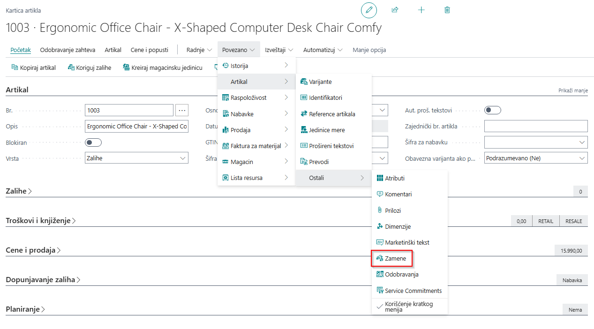
Otvoriće se prozor u kojem možete podesiti zamenu u jednom smeru (artikl A može biti zamena za artikl B, ali ne i obrnuto) ili u oba smera (assets/artikli A i B su međusobno zamenjivi). Ako je zamena dvosmerna, potrebno je označiti polje Zamenjiv, a sistem će automatski kreirati unakrsnu zamenu. 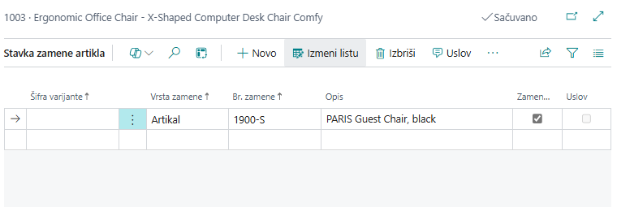
Kada se artikal doda na red naloga za prodaju, u okviru Detalji artikla biće prikazani dostupni zamenski artikli. 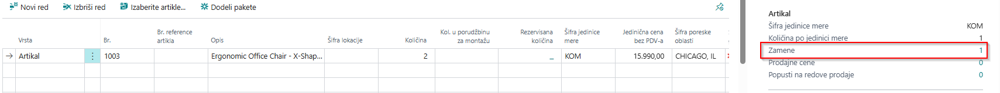
Moguće je dodati i uslove za zamenski artikal, ali oni imaju isključivo informativnu svrhu i ne utiču na automatsku zamenu artikala.
Neskladišteni artikli
Ova funkcionalnost se koristi za artikle koji nisu deo redovnog skladišta, ali se prodaju kupcima.
Neskladišteni artikli se mogu uneti u prodajne ponude i naloge za prodaju, a biraju se iz postojećeg popisa neskladištenih artikala.
Kartica neskladištenog artikla sadrži manje podataka od standardne kartice artikla, kao što je prikazano na sledećoj slici.
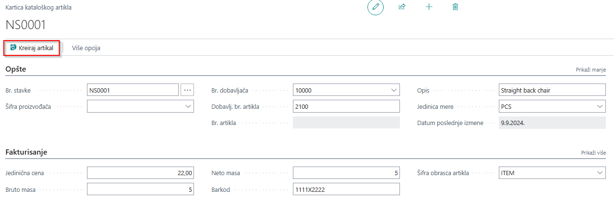
Neskladišteni artikli mogu se pretvoriti u artikle koji se drže na zalihama na dva načina:
- Sa kartice neskladištenog artikla – Klikom na Kreiraj artikal, sistem kreira novi artikal na osnovu podataka sa neskladištenog artikla.
- Sa reda naloga za prodaju – Izborom Red -> Funkcije -> Izaberi kataloški artikal, sistem automatski kreira skladišteni artikal iz neskladištenog. Kada se neskladišteni artikal konvertuje, na kartici novog artikla u sekciji Zalihe biće označeno polje Kreiran iz neskladištenog artikla.
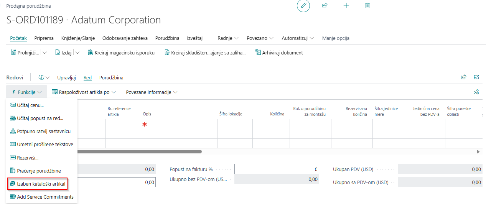
Napomena: Neskladišteni artikli ne mogu se direktno koristiti na izlaznim fakturama, već samo u prodajnim ponudama i nalozima za prodaju.
Šifra kategorije artikla
Budući da kartica neskladištenog artikla ne sadrži polja za knjižne grupe i metode obračuna troškova, važno je uneti Šifru kategorije artikla.
Ova šifra služi kao šablon za kasnije kreiranje skladištenog artikla i sadrži podatke o knjižnim grupama, metodama obračuna troškova i drugim relevantnim informacijama. Neskladišteni artikal ostaje takav dok se ne unese u prodajni dokument – tada se automatski konvertuje u standardni artikal.
Atribut artikala
Atributi artikala, omogućavaju definisanje dodatnih karakteristika artikla, što olakšava pretragu i filtriranje.
Atribut može biti proizvođač, boja, širina, dužina, visina, materijal, masa itd. Mogu se kreirati ručno, kao i njihove vrednosti.
Atributi se dodaju putem kartice artikla izborom Artikal -> Atributi.
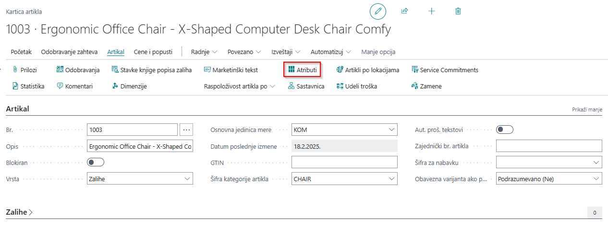
Klikom na prazan red ili na akciju Novi red dodeljuju se novi atributi i vrednosti.
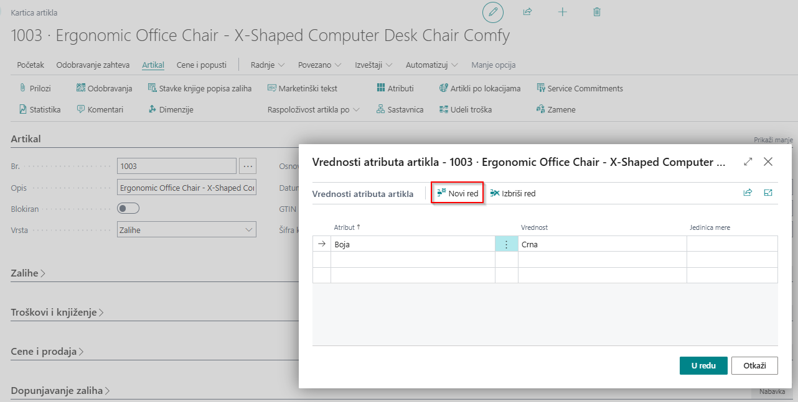
Sa polja Atribut može se pogledati lista svih dostupnih atributa koji su već definisani. Novi atribut može se kreirati klikom na akciju Novo.
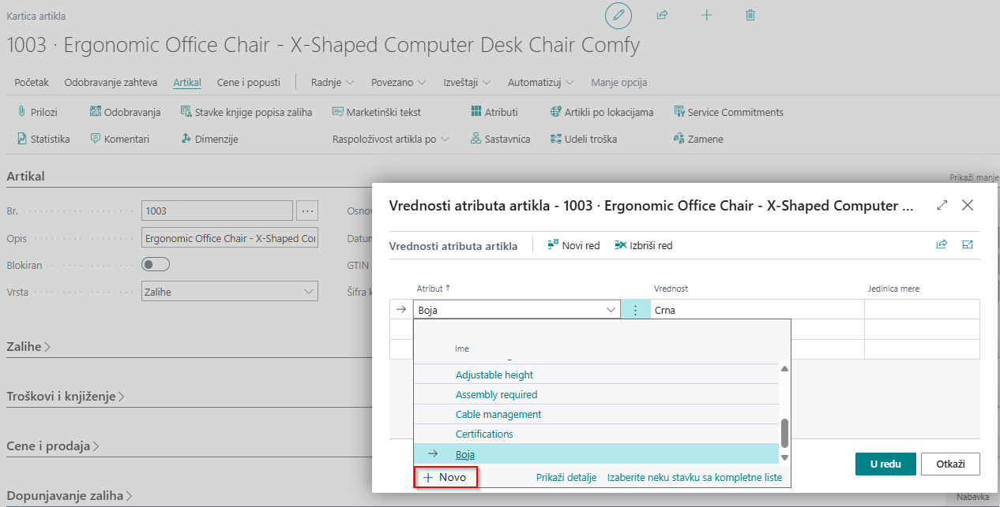
U otvorenom prozoru unosi se naziv atributa i bira se vrsta atributa.
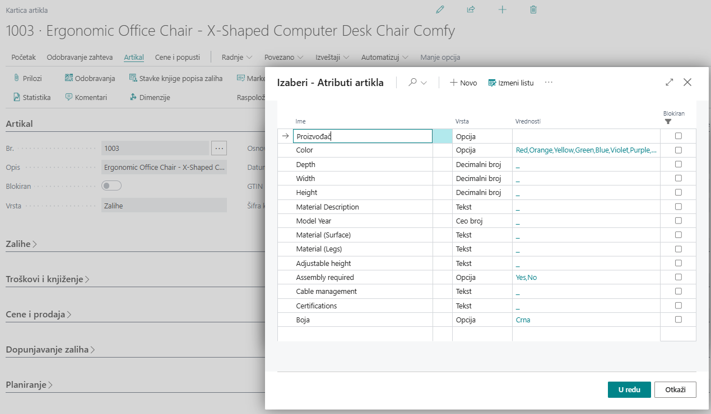
Pri definisanju atributa moguće je izabrati jednu od sledećih vrsta:
- Opcija – Izbor između unapred definisanih opcija.
- Tekst – Unos slobodnog teksta.
- Ceo broj – Unos celobrojne vrednosti.
- Decimalni broj – Unos decimalnog broja.
- Datum – Unos datuma.
Nova vrednost kreira se klikom na polje Vrednost i odabirom akcije Novo.
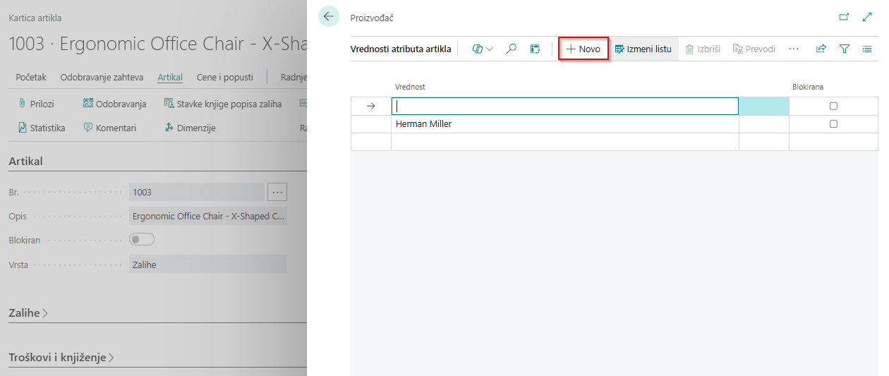
Kreirani autribut i vrednost se potom dodeli atriklu.
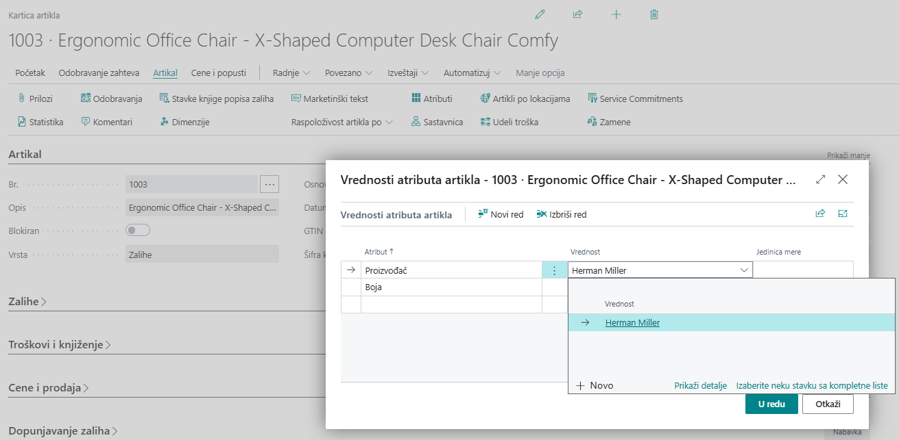
Nakon što se kreirani i postavljeni atribut doda artiklu, moguće je videti ga na kartici artikla u sekciji Atribut artikla.
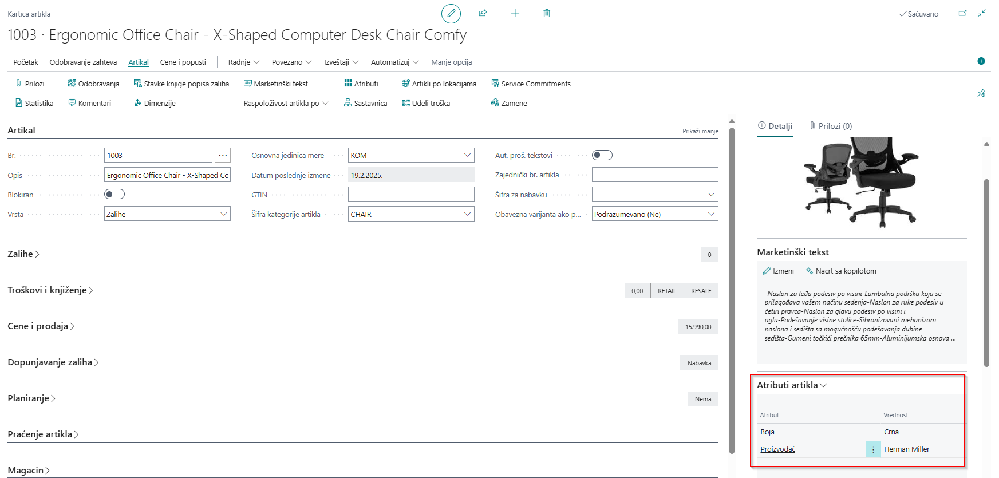
Atributi se mogu dodeliti i kategorijama artikala, čime se automatski primenjuju na sve artikle unutar te kategorije.
Na kartici artikla potrebno je izabrati Šifra kategorije artikla, pronaći željenu kategoriju i kliknuti Prikaži detalje.
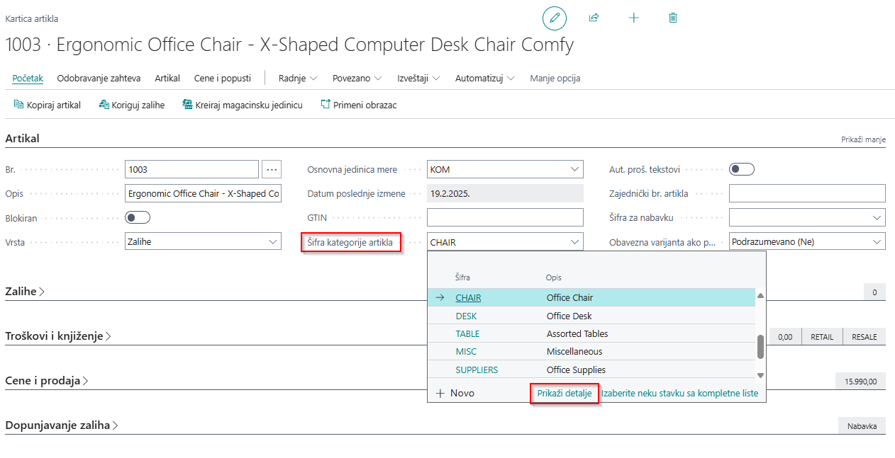
U otvorenom prozoru moguće je dodati atribute koji će se primeniti na sve proizvode unutar odabrane kategorije.
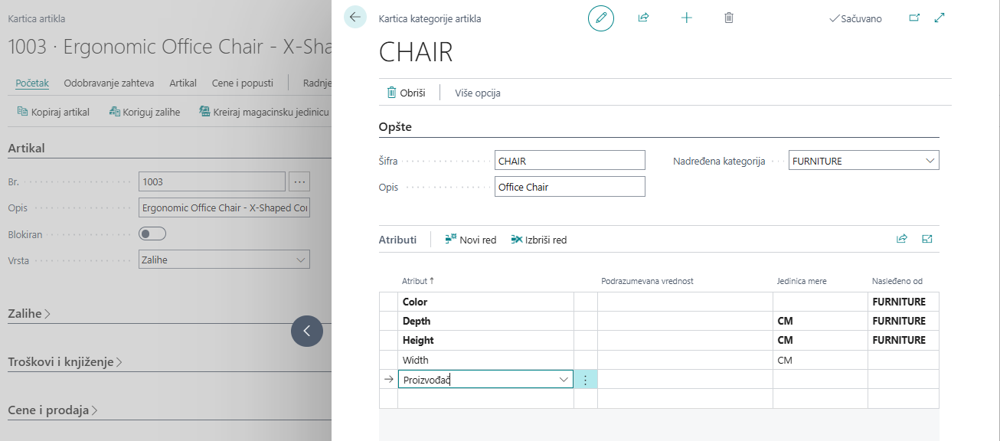
Kako bi se artikli filtrirali prema atributu, potrebno je na listi artikala koristiti putanju Atributi -> Filtriraj prema atributima.
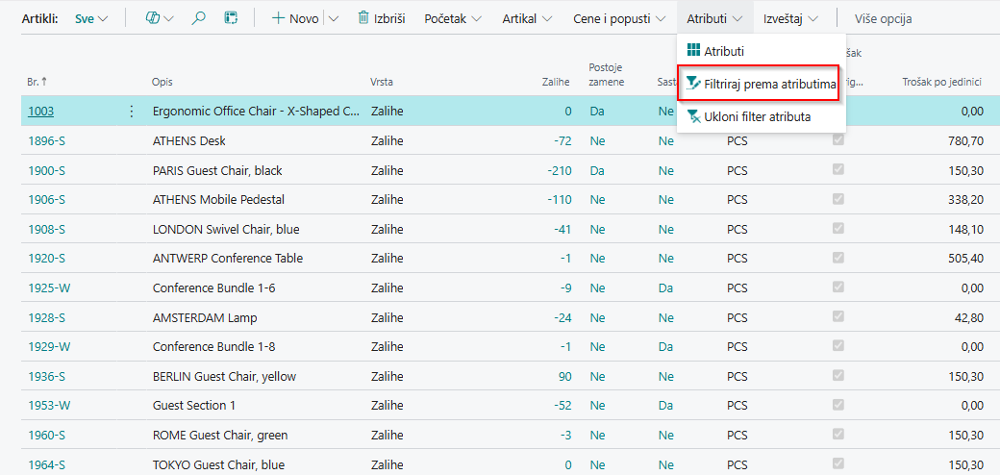
Moguće je postaviti više atributa istovremeno za preciznije filtriranje.
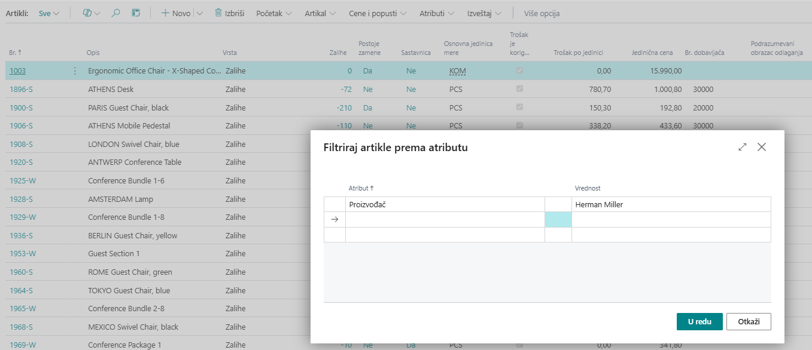
Filteri se uklanjaju klikom na Ukloni filter atributa.
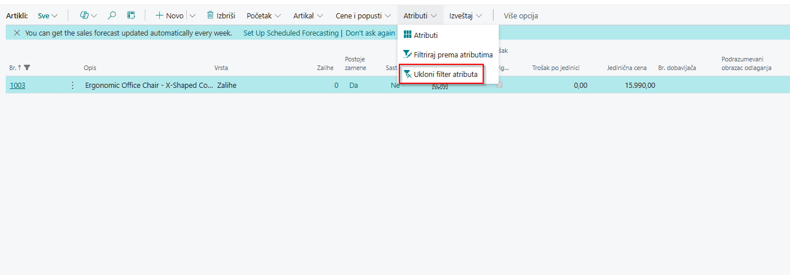
Varijante artikla
U Microsoft Dynamics 365 Business Central moguće je definisati različite varijante za jedan artikal, čime se olakšava upravljanje artiklima koji imaju varijacije, poput različitih boja ili veličina. Umesto kreiranja svakog varijantnog artikla kao zasebnog unosa, varijante se postavljaju unutar jednog artikla.
Kako bi se za artikal postavile različite varijante, potrebno je na kartici artikla izabrati Povezano -> Artikal -> Varijante.
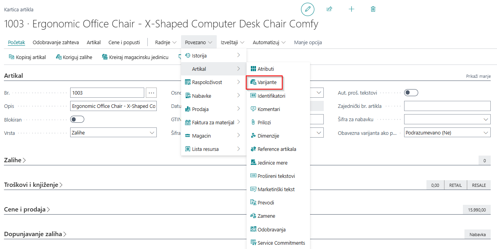
Otvoriće se stranica na kojoj se za svaku varijantu unose Šifra i Opis.
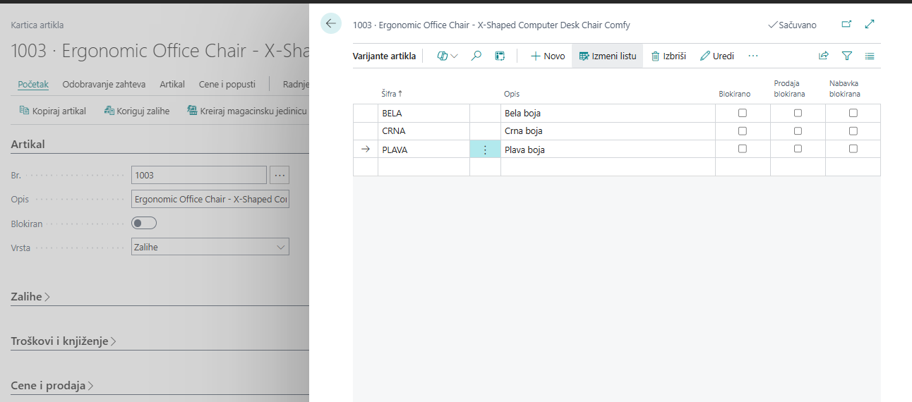
Moguće je dodati prevode varijanti na druge jezike putem Prikaži ostalo -> Prevodi.
Prilikom unosa na nabavnim i prodajnim dokumentima potrebno je uneti i Šifru varijante. Ako ova kolona nije prikazana, može se dodati na redove dokumenata. Kada se artikal primi sa unetom šifrom varijante, knjiženjem se u stavkama analitike artikla transakcije razlikuju prema varijantama.
Za artikle koji imaju definisane varijante, moguće je proveriti raspoloživost po varijantama putem Artikial -> Raspoloživost artikla po -> Varijanta.
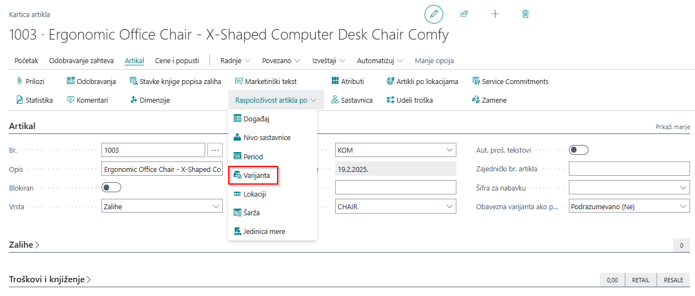
Pregled Raspoloživosti po varijanti :
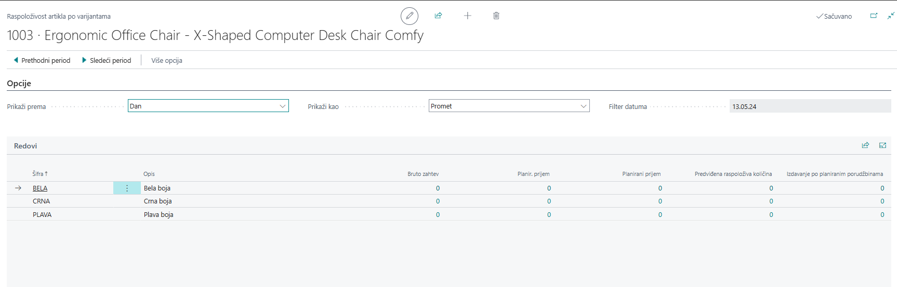
Stavke
Kako biste videli sve stavke vezane za određeni artikal, potrebno je izabrati Povezano -> Istorija -> Stavke.
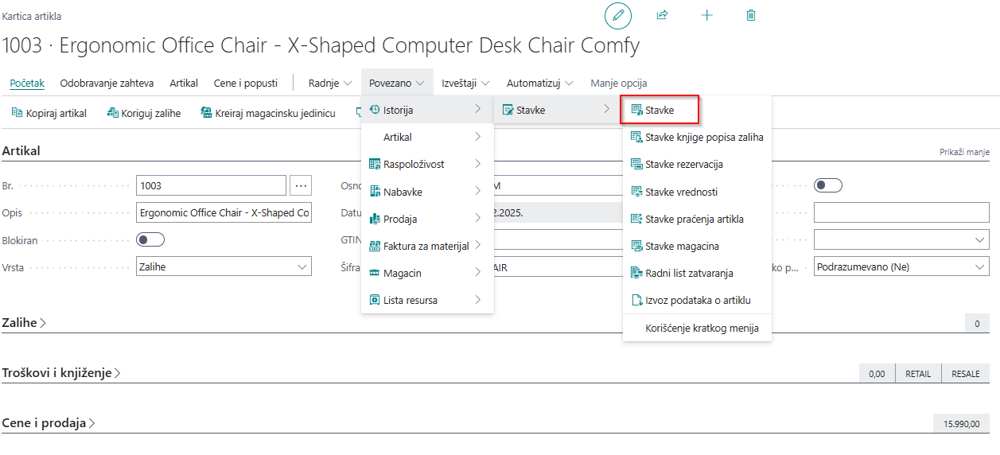
Ova akcija prikazuje prozor sa svim proknjiženim dokumentima povezanim sa tim artiklom, uključujući promene na zalihama, brojeve dokumenata, datume i vrednosti.
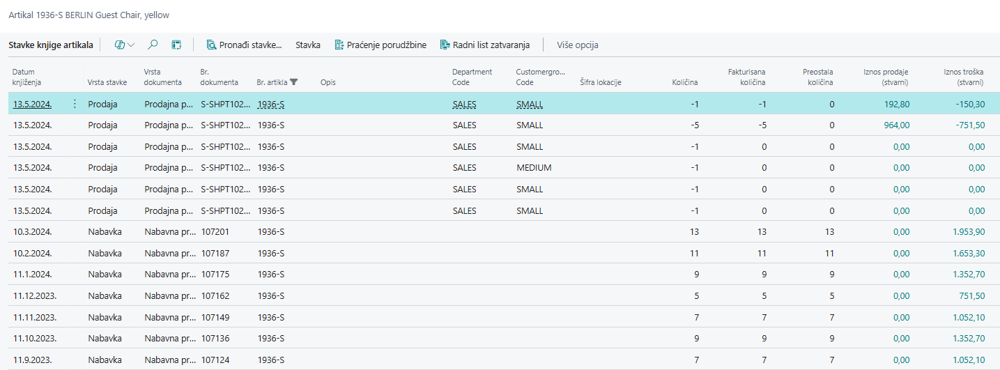